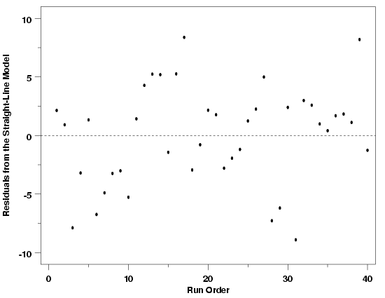
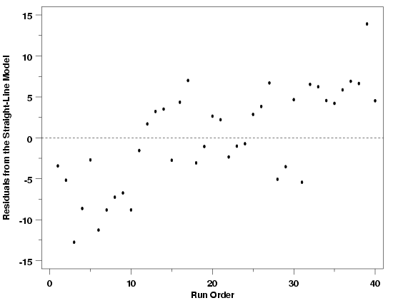
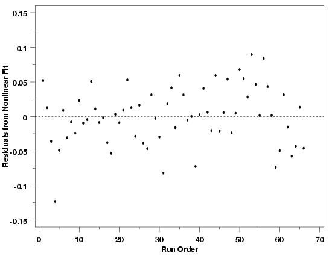

|
4.
Process Modeling
4.4. Data Analysis for Process Modeling 4.4.4. How can I tell if a model fits my data?
|
|||
| Run Order Plots Reveal Drift in the Process | "Run order" or "run sequence" plots of the residuals are used to check for drift in the process. The run order residual plot is a special type of scatter plot in which each residual is plotted versus an index that indicates the order (in time) in which the data were collected. This plot is useful, however, only if data have been collected in a randomized run order, or some other order that is not increasing or decreasing in any of the predictor variables used in the model. If the data have been collected in a time order that is increasing or decreasing with the predictor variables, then any drift in the process may not be able to be separated from the functional relationship between the predictors and the response. This is why randomization is emphasized in experiment design. | ||
| Pressure / Temperature Example | To show in a more concrete way how run order plots work, the plot below shows the residuals from a straight-line fit to the Pressure/Temperature data plotted in run order. Comparing the run order plot to a listing of the data with the residuals shows how the residual for the first data point collected is plotted versus the run order index value 1, the second residual is plotted versus an index value of 2, and so forth. | ||
| Run Sequence Plot for the Pressure / Temperature Data |  | ||
| No Drift Indicated | Taken as a whole, this plot essentially shows that there is only random scatter in the relationship between the observed pressures and order in which the data were collected, rather than any systematic relationship. Although there appears to be a slight trend in the residuals when plotted in run order, the trend is small when measured against short-term random variation in the data, indicating that it is probably not a real effect. The presence of this apparent trend does emphasize, however, that practice and judgment are needed to correctly interpret these plots. Although residual plots are a very useful tool, if critical judgment is not used in their interpretation, you can see things that aren't there or miss things that are. One hint that the slight slope visible in the data is not worrisome in this case is the fact that the residuals overlap zero across all runs. If the process was drifting significantly, it is likely that there would be some parts of the run sequence in which the residuals would not overlap zero. If there is still some doubt about the slight trend visible in the data after using this graphical procedure, a term describing the drift can be added to the model and tested numerically to see if it has a significant impact on the results. | ||
| Modification of Example | To illustrate how the residuals from the Pressure/Temperature data would look if there were drift in the process, a modified version of the data was simulated. A small drift of 0.3 units/measurement was added to the process. A plot of the data is shown below. In this run sequence plot a clear, strong trend is visible and there are portions of the run order where the residuals do not overlap zero. Because the structure is so evident in this case, it is easy to conclude that some sort of drift is present. Then, of course, its cause needs to be determined so that appropriate steps can be taken to eliminate the drift from the process or to account for it in the model. | ||
| Run Sequence Plot for Pressure / Temperature Data with Drift |  | ||
| As in the case when the standard deviation was not constant across the data set, comparison of these two versions of the data is interesting because the drift is not apparent in either data set when viewed in the scale of the data. This highlights the need for graphical residual analysis when developing process models. | |||
| Applicable to Most Regression Methods | The run sequence plot, like most types of residual plots, can be used to check for drift in many regression methods. It is not limited to least squares fitting or one particular type of model. The run sequence plot below shows the residuals from the fit of the nonlinear model $$ y = \beta_0 + \beta_1\exp\left[-\left(\frac{x_1}{\beta_2+\beta_4x_2+\beta_5x_2^2}\right)^{\beta_3}\right] + \varepsilon $$ to the data from the Polymer Relaxation example. The even spread of the residuals across the range of the data indicates that there is no apparent drift in this process. | ||
| Run Sequence Plot for Polymer Relaxation Data |  | ||

{kind=link}
{kind=link}
{kind=link}